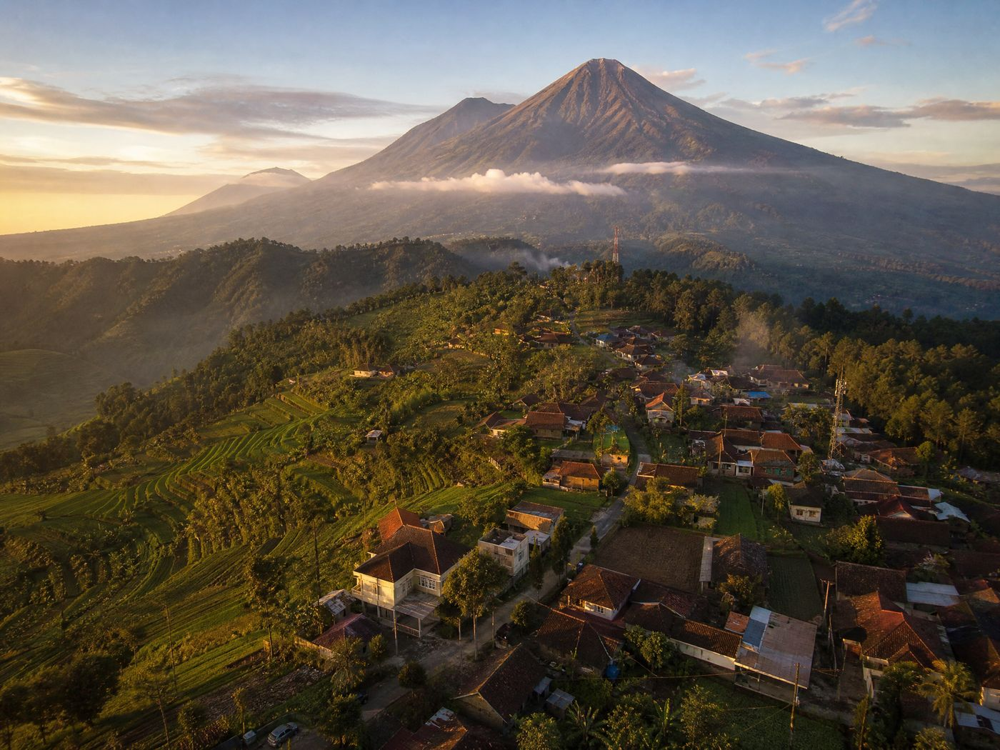

Profil Desa Kentengsari
Mengenal lebih dalam sejarah, geografis, dan pemerintahan Desa Kentengsari.
Dari Kenteng dan Sari Menjadi Kentengsari
Nama Desa Kentengsari merupakan penggabungan dari dua nama desa pendahulunya, yaitu Desa Kenteng dan Desa Sari. Penggabungan ini melahirkan satu kesatuan wilayah administratif yang kini dikenal sebagai Desa Kentengsari.
Desa Kentengsari berada di Kecamatan Windusari, Kabupaten Magelang, Jawa Tengah, dan merupakan desa terkecil di kecamatan tersebut. Jaraknya sekitar 2,5 Km dari ibu kota kecamatan dan 29 Km dari ibu kota kabupaten melalui Bandongan.
Wilayahnya terletak di lereng Gunung Sumbing dengan ketinggian 750 meter di atas permukaan laut. Kondisi ini menghadirkan udara yang sejuk dan tanah yang subur — anugerah yang dimanfaatkan masyarakat untuk bertani padi, tembakau, sayuran, dan berbagai komoditas pertanian lainnya.

Kentengsari Dalam Angka
Gambaran kondisi demografis dan administrasi Desa Kentengsari.
Landmark & Sarana Umum
Fasilitas yang menjadi pusat kegiatan dan pelayanan masyarakat Desa Kentengsari.
Kantor Desa
Pusat pelayanan administrasi dan informasi bagi masyarakat.
Sekolah Dasar
Fasilitas pendidikan dasar bagi putra-putri desa.
Tempat Ibadah
Masjid dan mushola di tiap dusun sebagai pusat kegiatan rohani.
Lahan Pertanian
Hamparan sawah dan kebun tembakau yang menjadi tulang punggung ekonomi desa.
“Terwujudnya Desa Kentengsari yang maju, mandiri, dan sejahtera, berlandaskan gotong royong serta kearifan lokal masyarakat lereng Gunung Sumbing.”
Langkah Nyata Membangun Desa
- Meningkatkan kualitas pelayanan publik yang transparan, cepat, dan akuntabel bagi seluruh masyarakat desa.
- Mengembangkan sektor pertanian dan ekonomi produktif sebagai tulang punggung kesejahteraan warga.
- Memperkuat nilai gotong royong, kerukunan, dan kearifan lokal dalam kehidupan bermasyarakat.
- Melestarikan lingkungan dan potensi alam lereng Gunung Sumbing secara berkelanjutan.
- Meningkatkan kualitas sumber daya manusia melalui pendidikan, pelatihan, dan pemberdayaan pemuda.
Struktur Organisasi
Susunan pemerintahan Desa Kentengsari yang melayani masyarakat.
Didukung oleh Badan Permusyawaratan Desa (BPD), lembaga kemasyarakatan, PKK, Karang Taruna, serta seluruh elemen masyarakat.